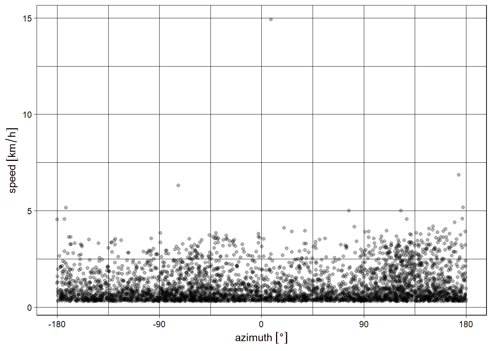

# Intenta importar el archivo y mira las características de estos objetos mediante summary() y str()
data1 <- read.csv("zebras.csv")
data2 <- read.csv2("zebras.csv")
data3 <- read.table("zebras.csv", header = TRUE, na.strings = "NA", sep=";")3 Datos de telemetría satelital
Como he hecho énfasis hasta ahora, antes de iniciar con análisis, es necesario asegurarse que la información ingresada sea la apropiada para evitar cualquier tipo de errores, desde mensajes de advertencia, a impedimentos para correr funciones, y errores en los resultados finales.
3.1 Importación, limpieza y visualización de datos telemétricos
Es de suma importancia que estos pasos sean realizados de manera correcta, ya que cualquier error en la importación y limpieza de los datos nos puede traer grandes errores.
A manera de ejercicio, he tomado material del curso Landscape and Analysis Modeling de The University of Tulsa, al que pueden acceder gratuitamente para profundizar más en los temas que trataremos en estas clases. Además, modifiqué el formato del archivo original MigratoryZebra.csv, por un motivo que será obvio a continuación.
Es siempre aconsejable tener una mirada general de los datos antes de leerlos como objetos en R, ya que se debe utilizar la función adecuada para su lectura. Descarga y abre el archivo que usarás en este módulo zebras.csv, en un archivo de texto y observa algunas características importantes del archivo como los separadores de columnas y los indicadores de decimales.
IMPORTANTE
Evita abrir cualquier archivo que será importado a R, utilizando Excel como primera opción. Utiliza editores de texto como Notepad o Notepad++.
Puedes ver que las columnas están separadas por ;, y los decimales mediante ,.
Ahora activa el paquete readr (también parte de tidyverse) e intenta importar los datos mediante la función read_csv2.
data <- read_csv2("zebras.csv")
summary(data)
str(data)Ya que tienes el archivo debidamente importado, extrae algunas columnas de interés y asigna un nombre más intuitivo, fácil de escribir y recordar. Esta es una preferencia personal, así que puedes omitir esta parte según tu preferencia.
zebras <- data[, c("event-id", "individual-local-identifier",
"location-long", "location-lat", "study-local-timestamp")]
zebras <- zebras %>%
rename(id = "event-id", identifier = "individual-local-identifier",
long = "location-long",
lat = "location-lat",
timestamp = "study-local-timestamp")
# Inspecciona las primeras filas y los nombres de las columnas
head(zebras)
## # A tibble: 6 × 5
## id identifier long lat timestamp
## <dbl> <chr> <dbl> <dbl> <chr>
## 1 210260446 Z3864 23.5 -19.4 2007-10-25 02:02:11,000
## 2 210260447 Z3864 23.5 -19.4 2007-10-25 03:01:49,000
## 3 210260448 Z3864 23.5 -19.4 2007-10-25 04:01:38,000
## 4 210260449 Z3864 23.5 -19.4 2007-10-25 05:02:18,000
## 5 210260450 Z3864 23.5 -19.4 2007-10-25 06:01:35,000
## 6 210260451 Z3864 23.5 -19.4 2007-10-25 07:02:16,000Ahora puedes observar la distribución de estas zebras de una manera sencilla mediante funciones base.
# Cambia el valor de pch y mira que sucede con el gráfico
plot(zebras[, c("long", "lat")], pch = 20)zebras
Los individuos muestreados se encuentran en una extensión de terreno enorme, por lo que es preferible para los fines de esta primera lección, que analices animales que comparten un mismo espacio geográfico. Para esto, puedes hacer un subset del data frame original, y además puedes practicar tus habilidades en manejar dyplyr.
dos_zebras <- zebras %>%
filter(identifier == "Z3864" | identifier == "Z6405") %>%
dplyr::select(identifier, long, lat, timestamp)Realiza nuevamente un gráfico asignando colores a cada individuo.
#cambia el valor de pch y mira que sucede con el gráfico
plot(dos_zebras[, c("long", "lat")], pch = 20, col = c("#440D54", "#3CBB75"))
legend("topright", legend = c("Z3864", "Z6405"),
fill = c("#440D54", "#3CBB75"),
pch = 20, box.lty = 0)zebras
Tarea
Utiliza tus habilidades y conocimiento en ggplot2 para realizar un gráfico similar al que acabas de realizar con plot.
Como has aprendido en lecciones anteriores, no es conveniente embarcarse en algúm tipo de análisis sin antes realizar una limpieza de tus datos. Ahora puedes proceder a remover los NA’s de las columnas señaladas por summary.
# Investiga si el set de datos posee NAs
summary(dos_zebras)
## identifier long lat timestamp
## Length:8915 Min. :23.52 Min. :-20.81 Length:8915
## Class :character 1st Qu.:23.61 1st Qu.:-20.59 Class :character
## Mode :character Median :24.88 Median :-20.44 Mode :character
## Mean :24.47 Mean :-20.15
## 3rd Qu.:25.00 3rd Qu.:-19.44
## Max. :25.26 Max. :-19.39
## NA's :1 NA's :1
which(is.na(dos_zebras$lat))
## [1] 1802
which(is.na(dos_zebras$long))
## [1] 1802
Ejercicio
Utiliza cualquier método para eliminar los datos de longitud y latitud faltantes en la fila 1802, y verifica que el proceso de limpieza de datos sea correcto.
!Haz limpiado los datos con éxito! Ahora crea un objeto que será transformado y proyectado posteriormente.
zebras.proj <- dos_zebras3.2 Transformación y proyección cartográfica
Para continuar y entender cual es el propósito de los siguientes pasos, primero debes entender que es una proyección cartográfica. En breve, la posición en el espacio tridimensional de un animal tomada mediante coordenadas decimales deben ser transformadas a un objeto bidimensional. Esta transformación viene acompañada de un gran problema como lo es la distorsión, y esta será más o menos evidente según el tipo de proyección que elijas.
El canal de YouTube Vox tiene un excelente video que muestra gráficamente este problema.
El paquete sp es el indicado para esta tarea ya que ofrece clases y métodos para manejar datos espaciales. Así, empezarás por transformar el objeto zebras.proj a un objeto de clase SpatialPointsDataFrame.
library(sp)
library(sf)
zebras.proj <- SpatialPointsDataFrame(coords = as.data.frame(cbind(zebras.proj$long, zebras.proj$lat)),
data = zebras.proj,
proj4string = CRS("+proj=longlat +ellps=WGS84 +datum=WGS84 +no_defs"))Para entender el código que antecede a la función proj4string primero te debes preguntar, ¿qué significa CRS, y qué argumentos contiene esta función? proj4string no es nada más que una librería que dispone de métodos que permiten la transformación entre diferentes sistemas de coordenadas de referencia (CRS).
CRS permite determinar la ubicación de un punto de una manera estandarizada, utilizando uno o más números que representan tanto su posición vertical como horizontal. Para lograr esto, utiliza como referencia un elipsoide que es una representación matemática de la Tierra. Una vez definido el sistema de coordenadas, datum define la posición y orientación del elipsoide de referencia en relación con el centro de la Tierra y el meridiano usado como longitud cero, el meridiano principal. Investiga sobre el significado de WGS84.
Como ya deberia ser habitual para ti, analiza tu objeto antes de proseguir. ¿Qué sucedió con zebras.proj? Aplica funciones que has aprendido para analizar este nueva clase de objeto.
Precaución
He decidido mostrar el código antiguo de definir la proyección para mejorar la comprensión de lo que sucede tras escenas del código. Sin embargo proj4string ahora debe definirse como CRS(SRS_string = "EPSG:4326")
class(zebras.proj)
## [1] "SpatialPointsDataFrame"
## attr(,"package")
## [1] "sp"
summary(zebras.proj)
## Object of class SpatialPointsDataFrame
## Coordinates:
## min max
## V1 23.52338 25.26070
## V2 -20.81156 -19.38558
## Is projected: FALSE
## proj4string : [+proj=longlat +datum=WGS84 +no_defs]
## Number of points: 8914
## Data attributes:
## identifier long lat timestamp
## Length:8914 Min. :23.52 Min. :-20.81 Length:8914
## Class :character 1st Qu.:23.61 1st Qu.:-20.59 Class :character
## Mode :character Median :24.88 Median :-20.44 Mode :character
## Mean :24.47 Mean :-20.15
## 3rd Qu.:25.00 3rd Qu.:-19.44
## Max. :25.26 Max. :-19.39Ya has verificado la transformación de las CRS, sin embargo, estos siguen siendo puntos en un mapa representados por medidas angulares. ¿De qué manera podemos medir la distancia entre ellos para poder calcular el área descrita por los puntos posteriormente? Transformando esta proyección a un sistema basado en metros.
zebras.transf <- spTransform(zebras.proj,
CRS("+proj=lcc +lat_1=20 +lat_2=-23 +lat_0=0 +lon_0=25 +x_0=0 +y_0=0 +ellps=WGS84 +datum=WGS84 +units=m +no_defs"))Esta CRS es una proyección cónica y representa a la forma más precisamente que a un área. Esta transformación nos da como resultado un mapa matemático de coordenadas esféricas en un plano bidimensional, cuyas unidades pueden son expresadas en metros. Con todo esto en mente, ya podemos plotear este objeto proyectado de clase SpatialPointsDataFrame.
# ¿Qué diferencia tiene este grafico con el anterior?
plot(zebras.transf[, c("long", "lat")],
pch = 20, col = c("#440D54", "#3CBB75"), axes=TRUE)zebra observadas mediante una proyección cónica y transformada a un sistema basado en metros
¿Cuál es la diferencia entre la Figura 3.4 y Figura 3.3 ?
3.3 Análisis de trayectorias
Debes tener en cuenta que la limpieza de los sets de datos no es el único paso a seguir en el análisis espacial, también debes explorar métodos de segmentación o partición para poder discernir cambios en la conducta o trayectoria de un animal (Gurarie et al. (2016)). Según la pregunta de investigación que tengas debes indagar más en otros métodos como First Passage Time (FPT), step selection function, etc.
Aquí, verás brevemente como puedes obtener información sobre la trayectoria de las zebras que extrajimos previamente.
3.4 move2
Este paquete es la continuación de move, y asi como sp, realizó una transición para incorporar funciones de sf. Para iniciar necesitarás convertir el data frame zebras a un objeto de clase move2, y además deberás ocuparte de otro problema, la transformación del tiempo.
dos_zebras$timestamp <- as.POSIXct(dos_zebras$timestamp, "%Y-%m-%d %H:%M:%S", tz="UTC")
Importante
Establecimos la zona horaria como UTC, que es la que usualmente usan como predeterminada los collares satelitales. Sin embargo deber ser cauteloso al momento de definir la zona horaria, y transformarla a tu zona de estudio, si es que fuese necesario. Esto lo puedes hacer con el paquete lubridate.
Mediante as.POSIXct, te has asegurado de transformar una columna que fue importada como caracter, y ahora la tienes en formato POSIXct, con el cual R maneja el tiempo. Una vez tengas tu set de datos con el formato adecuado, puedes empezar.
library(move2)
library(units)
dos_zebras_move <- mt_as_move2(dos_zebras, coords = c("long", "lat"),
time_column = "timestamp", track_id_column = "identifier") %>%
# en Mercator porque funciones no corren en Lambert
sf::st_set_crs(4326)
# Estadísticas del objeto
mt_n_tracks(dos_zebras_move)
## [1] 2
# ¿Cada cuantas horas se tomaron posiciones satelitales?
timeLags <- set_units(mt_time_lags(dos_zebras_move), hours)
# Distribucion de time lags
timeLags_h <- units::drop_units(timeLags)
hist(timeLags_h, breaks = 50, main=NA, xlab = "Time lag en horas")Puedes graficar la distribucion de puntos por individuo.
# Grafico por individuos con ggplot2
ggplot() +
geom_sf(data = dos_zebras_move) +
geom_sf(data = mt_track_lines(dos_zebras_move), aes(color = identifier)) +
theme_light()
Ahora puedes anotar algunos parametros de movimiento como:
- Acimut o dirección angular: como sugiere su nombre estima la dirección engrados angulares en los cuales el animal se mueve.
- Desplazamiento cuadrado neto (NSD): mide el movimiento del animal como una distancia cuadrada neta y permite predecir si el animal mantiene un movimiento estacionario, migatorio. Mira la Figura 3.5.
- Velocidad: ten en cuenta que este paquete mide velocidad lineal entre un punto A y B, en un tiempo t0 y t1.
dos_zebras_annot <- dos_zebras_move %>%
mutate(azimuth = mt_azimuth(dos_zebras_move),
speed = mt_speed(dos_zebras_move),
turnangle = mt_turnangle(dos_zebras_move),
NSD = (st_distance(dos_zebras_move,
dos_zebras_move[1,]))^2)Debes tener en cuenta que es necesario agregar un límite en el cual tu infieras que el animal está en movimiento o no. Esto dependerá de tu conocimiento sobre el comportamiento de tu organismo de estudio, el terreno, el tipo de collar que utilizaste para tomar los puntos, entre otros factores. Así puedes establecer, por ahora, un limite de 5 m/min como indicador de movimiento en las zebras.
# Cuando se mueven
zebras_movimiento <- dos_zebras_annot %>% filter(speed > set_units(5, "m/min"))zebras_movimiento$NSD <- set_units(zebras_movimiento$NSD, "km^2")
head(zebras_movimiento$NSD)
## Units: [km^2]
## [,1]
## [1,] 7.856621e-04
## [2,] 2.968707e+00
## [3,] 2.310044e+01
## [4,] 3.282908e+01
## [5,] 2.785819e+01
## [6,] 2.853610e+01
ggplot(zebras_movimiento, aes(x = mt_time(zebras_movimiento), y = NSD,
group = identifier)) +
geom_line() +
facet_grid(~identifier, scales = "free_x") +
labs(x = "", y ="Desplazamiento cuadrático neto") +
theme_bw()ggplot(zebras_movimiento, aes(x = azimuth, y = speed)) +
geom_point(color= alpha("black", 0.3)) +
scale_x_units(unit = "degrees", breaks = c(-2:2) * 90) +
scale_y_units(unit = "km/h") +
theme_linedraw()
TAREA
Grafica la distribución de estas zebras sobre un mapa.